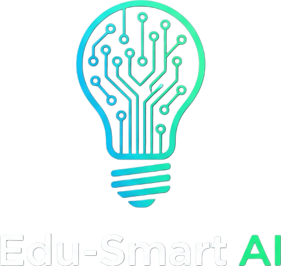

تنسيق رقمي متقدم وتوظيف AI
يرتكز مشروعنا على الوضوح البصري التام. قمنا بدمج لغة البرمجة بايثون مع واجهات ويب عصرية. تم استخدام تقنيات الذكاء الاصطناعي لتوليد الهوية البصرية وتنسيق الأكواد لضمان أعلى معايير الجودة التقنية والتعليمية.

🧠 الخريطة الذهنية لهيكلية المشروع
يعمل النظام وفق ترابط تقني مدروس يجمع بين البرمجة، البيانات اللحظية، والواجهة التعليمية:
المدخلات
API العملات + بيانات المستخدم
API العملات + بيانات المستخدم
المعالج
لغة Python + مكتبة Math
لغة Python + مكتبة Math
المخرجات
تطبيق GUI + موقع Web
تطبيق GUI + موقع Web
📸 لقطات شاشة حقيقية من التطبيق

الآلة العلمية Casio
واجهة متطورة تدعم الدوال المثلثية، اللوغاريتمات، والعمليات الحسابية المعقدة بدقة متناهية.

المحول اللحظي المطور
نظام تحويل عملات عالمي مربوط ببيانات حية (Live Data) لمتابعة أسعار الدولار، اليورو، والذهب.
الهوية البصرية والتوازن
نطبق معايير التصميم الرقمي الحديث. تم تنسيق النصوص باستخدام خطوط احترافية، مع توزيع الصور لتحقيق "التوازن البصري"، مما يسهل على الطالب استيعاب المعلومة الرقمية بسرعة ودقة.
كما تلاحظون، تم دمج اللوجو المتحرك الذي يعبر عن تدفق البيانات والذكاء في معالجة العمليات.